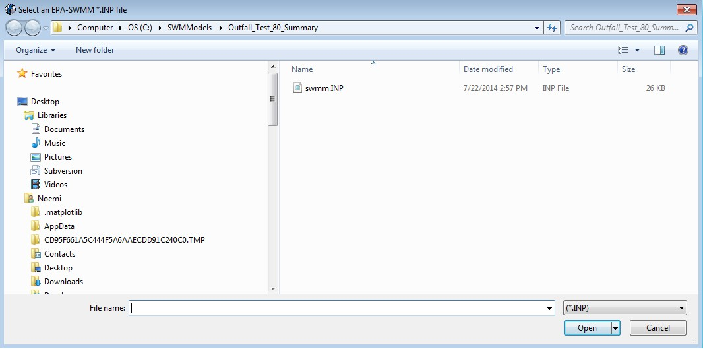

4. Chapter 4
4.1. Introduction
These guidelines will assist in understanding the FLO-2D surface water-storm drain interface.
Surface water hydrology and hydraulics including the rainfall runoff, infiltration, and flood routing in channels, streets or unconfined overland flow are simulated by the FLO2D surface water model.
The storm drain engine only solves the pipe flow routing and hydraulics.
A storm drain inlet must have a name starting with an ‘I’ to distinguish it from a junction and to collect water from the surface.
The inlet locations are assigned in the SWMM.INP file. The connectivity between inlets/outfalls and the surface grid system is created by the QGIS Plug-in or the GDS. A set of shapefiles containing inlets/junctions, outfalls and conduits is needed to create the storm drain files in the QGIS plug-in. For a more detailed information about how to create the storm drain system in QGIS review the FLO-2D Plugin User’s Manual and the FLO-2D Plugin Technical Reference Manual.
Storm drain outfall nodes can be assigned to discharge pipe flow to the surface water system or off the models completely. Only the “Free” outfall boundary condition can discharge back to the surface water model.
Return flow from inlets to the water surface depends on the relationship between the surface water elevation and the pipe pressure.
To get started on a new project, first develop the FLO-2D model by importing the digital terrain model (DTM) points, selecting a grid size, outlining the computational domain, assigning the grid element elevations and importing an aerial image. Other features of surface water flooding such as inflow-outflow nodes, buildings, levees and others can then be added either before or after the storm drain system model is created. The QGIS plug-in is the recommended GUI to create the storm drain system. The SWMM GUI (activated from the GDS command: Tools| Storm Drain| Run Storm Drain GUI…) or other storm drain GUI’s can be used to create the storm drain data base. The GDS or QGIS has several functions that integrate the FLO-2D surface water model with the storm drain model:
Activates the SWMM storm drain GUI;
Create the SWMM.inp file using a set of shapefiles containing the storm drain system in QGIS plug-in;
Reads the data from the SWMM.inp file and associates inlets/outlets with FLO-2D cells;
Displays a dialog box to enter the storm drain inlet geometry data;
Saves and edits the SWMMFLO.DAT file containing the inlet geometry data.
Displays the inlets and outlets and the piping network connections:
✓ Inlets are identified as blue cells. The pipe system is represented as a magenta polyline.
Displays a dialog box containing the outfall list and all the outfall data needed.
Edits the switch that turns on the discharge from an outfall to the FLO-2D grid elements.
Saves the SWMMOUTF.DAT file.
Displays warning messages.
Graphically displays results including inflow and return flow hydrographs and the pipeline energy grade line. GDS can automatically create all storm drain discharge plots without opening the project in GDS. Open GDS PRO and go to Tools | Storm Drain | Storm Drain Discharge Display | from External .RPT. This will read the output file, create a subdirectory with the following name: StormDrainDischarge MM-DD-YYYY, and save to the new folder the storm drain discharge plots for all inlets, junctions and outfalls.
When an existing SWMM.inp file is read by the QGIS plug-in or by the GDS, the location of the the inlet positions and the associate grid element is automatically identified.
To summarize, a FLO-2D storm drain system model is generated through the following steps:
Create or open an existing FLO-2D model project;
Open the QGIS-plugin and generate all storm drain data files. QGIS plugin is the recommended GUI to create the storm drain system because its simplicity. For a more detailed information review the FLO-2D Plugin User’s Manual and the FLO-2D Plugin Technical Reference Manual.
IF GDS is the selected GUI to create the storm drain data files, then open the SWMM GUI from the GDS and develop the SWMM.inp data file, other third parties GUI have been mentioned in this manual.
Close the SWMM GUI and view the storm drain network in the GDS;
Generate the SWMMFLO.DAT file with the storm drain inlet data in GDS;
Create the SWMMOUTF.DAT using the Outfall Node Discharge Option in GDS;
Run the integrated FLO-2D Storm Drain System model.
After the FLO-2D grid system is prepared, the storm drain model switch (CONT.DAT file) must be activated to run the model from the QGIS or from the GDS. For further guidance in building a storm drain model, more detailed FLO-2D manuals explain the procedure step by step, the SWMM model GUI options and tools, and the EPA SWMM user manual can be also reviewed. The specific storm drain instructions, guidelines and comments are followed by suggested initial parameters and a checklist for entering and reviewing the data.
4.1.1. Detailed Storm Drain Instructions and Guidelines
Virtually all storm drain models are developed for urban areas. Specific instructions for creating a storm drain in a FLO-2D urban environment are:
A storm drain inlet/outfall should not be assigned to a completely blocked cell (ARF = 1); A reasonable amount of surface area should be available for the storm drain feature to interact with the surface water.
Higher roughness values can be assigned to floodplain elements with storm drain features (inlet or outfalls) to represent the storm drain flow disturbance around the inlet or outfall. This would help surface routing numerical stability.
Inlet rim elevations should match the floodplain elevation. It is possible to assign inlet rim elevations higher than the floodplain cell elevation, but this may lead to oscillating or poor results. For an inlet rating table, the inlet discharge is zero if the floodplain water surface elevation is less than the inlet rim elevation.
Levees and walls may isolate a storm drain feature in the model resulting in oscillating storm drain discharge. A review of the inlet/outfall location may be required.
Storm drain features should not be assigned to surface water inflow or outflow elements. There is an error message generated for this conflict.
Other specific urban guidelines are listed in Table 16.
Table 16. FLO-2D Storm Drain Instructional Comments.
Guidelines and Instructional Comments |
|
WSE isgreater thanpipepressurehead |
Inlet discharge is computed by FLO-2D and exchanged with the storm drain system. FLO-2D will use the grid element water depth (floodplain, channel or street) and the inlet geometry to calculate the inlet discharge. Horizontal inlets refer to gutter inlets and vertical inlets are culvert or pipe openings to the surface. Floodplain grid element elevation (FPE) is automatically set to the inlet rim elevation. For horizontal inlets changes to FPE are reported to a file named as FPRIMELEV.OUT. For vertical inlets:
The last column parameter ‘Feature’ in the GDS inlet dialog has three options:
If option 1 is assigned for a vertical inlet opening then there are two cases:
The corrected FPE is not revised in the FPLAIN.DAT file. The user must review the FPRIMELEV.OUT modifications and rename FPLAIN_SDElev.RGH and the TOPO_SDElev.RGH files to FPLAIN.DAT AND TOPO.DAT filesrespectively to make the elevation changes permanent. Rim elevations for the inlets located in channel/street cells must be verified and manually revised by the user. The discharge and volume that enters the storm drain is based on the inlet geometry and on the relationship between the water surface elevation and the storm drain pressure head. Storm drain inflow discharge is inlet controlled until the system capacity is reached. Inlet conditions:
Weir/orifice equations are used to calculate the discharge for inlets 1 thru 3 and 5. For the rating table option (INTYPE = 4), a relationship between cell flow depth and discharge is assigned in the GDS. An additional file (SWMMFLORT.DAT) is created for these type of inlets. |
Storm drainpressure isgreater thanthe WSEL |
Surcharging or return flow is computed from the storm drain to the surface water. Not all return flow or flooding reported in the SWMM.RPT file passes from the storm drain to the surface water since the pressure head has to be greater than the WSEL. Return flow volume is distributed over the grid element surface area as an increased incremental flow depth added to the existing cell depth. Inflow to storm drain from the surface water is not allowed in this case. |
WSE isgreater thanthe pressurehead and therimelevation |
No return flow from the storm drain to the surface water is computed. Volume in the inlet node stays in the pipe and the overflow volume is set to 0. Inflow to the storm drain from surface water is not computed. |
Volumeconservation |
Inflow to the storm drain and return volumes (flooding and outfall volumes) to the surface water are compiled and reported by the FLO-2D model. |
Reportingresults |
The FLO-2D file SWMMQIN.OUT reports the inflow and return flow discharge for each inlet. This is different from the discharge values reported in the SWMM.RPT file which includes lateral pipe inflow and outflow. SWMMOUTFIN.OUT file lists time and discharge pairs for storm drain outfall hydrographs when they discharge back to the surface water. |
Detentionbasin outlet |
Flapgates can be used to stop flow from going into the storm drain system. Flow only goes out of the outlet. The SWMMFLO.DAT file assigns a switch (FEATURE) that can have one of the following values:
|
FreeOutfalls |
Any type of SWMM outfall can be assigned. To discharge back to the FLO-2D surface water, the user has to set the outfall to type ‘free’. Discharge is based on the surface water elevation and storm drain pressure head. Outfall discharge will occur if WSE is greater than the pressure head. If the pressure head > WSEL: Outfall discharges to the FLO-2D grid cell. If the pressure head < WSEL: There is no outfall discharge but depth is equal to WSEL. Flow into the outfall depends on tide gate assignment and the WSEL. This is available only for the ‘free’ type of outfalls. It does not apply to normal, fixed, tidal or time series type of outfalls. When the outfall does not discharge to the surface water, the outfall head is assigned based on the type of outfall node. The following types can be set up:
|
Manholes |
Popping a manhole cover can be simulated. The surcharge depth is entered in the SWMMFLO.DAT file. The user can define the surcharge depth in the junction properties (SWMM.inp file). When the surcharge depth is set to different values in SWMMFLO.DAT and in the SWMM.inp file, the model uses the surcharge depth from the SWMMFLO.DAT.
|
4.1.2. Default Parameters
The following storm drain parameters are automatically assigned in the SWMM.inp file:
Runoff Wet Weather (WET_STEP) and Runoff Dry Weather (DRY_STEP) timesteps equal 00:01:00 min. These watershed routing parameters are not directly used by the storm drain model but can affect the storm drain routing if they are less than the ROUTING_STEP. This avoids an inappropriate assignment of these parameters.
Lengthening Step (LENGTHENING_STEP) is set as the routing timestep (ROUTING_STEP) divided by 6. This option increases the length of the shorter conduits based on the Courant-Friederick-Levy (CFL) stability criteria. The storm drain model bases the new equivalent pipe length on an estimate of the full flow velocity in the conduit as well as on the wave celerity. The full area, width and hydraulic radius are unchanged in the modified link but the length, slope and roughness are altered.
Length Factor = (Wave Celerity + Full Depth Velocity) * Timestep/ Pipe Length For a Length Factor > 1:
New Roughness= Old Roughness /Length Factor**0.5
New Slope = Old Slope Slope/Length Factor**0.5
The routing model (FLOW_ROUTING) for the FLO-2D storm drain component is set as dynamic wave (DYNWAVE) to account for backwater effects, entrance/exit losses, flow reversal or pressurized flow.
The inertial term (INERTIAL_DAMPING) is set to PARTIAL or dampen (Partial=1). The inertial terms in the Saint Venant Equation are reduced for critical flow and ignored for supercritical flow.
Report Control Actions and Report Input Summary ([Report] CONTROLS and INPUT) are automatically turned on.
“Start Reporting on” variables (START_DATE and START_TIME) in the SWMM GUI is automatically set as Start Analysis on. Both the FLO-2D and the storm drain model will start reporting results at the beginning of the simulation.
“End Analysis on” variables (END_DATE and END_TIME) in the SWMM GUI are automatically set based on the simulation time entered in FLO-2D. The Storm Drain results (*.RPT,*.OUT) are automatically saved when the model simulation runs until completion. If the model is stopped before completion, storm drain results are written.
4.1.3. Initial Parameters
When building the storm drain model, the following data assignments in the SWMM.inp file are recommended:
It is recommended to keep the names of the various storm drain components simple, short and uniform such as I1, I2, I3… for inlets. The number of characters should be less than 25. Use O = outlets and C = pipe conduits. This will simplify the graphics display of the storm drain components and make it easier to differentiate between inlets, manholes and outlets.
The END_TIME for the model duration is automatically assigned so that the END_TIME minus the START_TIME is equal to the simulation time SIMUL in the FLO-2D model CONT.DAT file.
The ROUTING_STEP is automatically assigned as equal to the FLO-2D Timestep. The FLO-2D Timestep is used as the Routing_STEP for all conditions including a VARIABLE_STEP equal or different to zero.
Note
The WET_STEP and DRY_STEP values are hardcoded to 1 minute.*
The REPORT_START_DATE and REPORT_START_TIME are automatically assigned as the start date and time. The storm drain component reporting time (REPORT_STEP) in SWMM.inp file is recommended to be set up as equal to the FLO-2D output interval (TOUT) in the CONT.DAT file. REPORT_STEP is a mixture of hours, minutes and seconds with the format 00:00:00. The unit for TOUT is hours.
4.1.4. Integration of a Storm Drain Network into a Complex Urban Model
Integrating a storm drain network into an urban model requires an understanding of how the storm drains will interact with the surface flow. In the FLO-2D model, the most complex interaction occurs between the storm drain features and the 1-D channel component. The storm drain system interfaces with channels through inlets and outfalls. An early identification of storm drain database deficiencies can save time and effort on a project.
4.1.4.1. Storm Drain Inlet – Channel Considerations
After the urban project is prepared, the following questions related to the storm drain inlet to channel system can be addressed:
Inlet locations:
Are all inlets correctly assigned inside the FLO-2D computational domain?
Are there inlets incorrectly assigned to the interior channel elements?
Are there inlets incorrectly assigned to the right channel bank elements?
Inlet elevations:
Are there channels discharging to a storm drain inlet?
Does the channel thalweg elevation match the inlet invert elevation?
Is the inlet set up as a vertical inlet opening in the SWMMFLO.DAT?
Storm drain inlets should not be set up in an interior or in a right bank channel element. If the channel discharges directly to a storm drain pipe via a culvert, assign the inlet to the channel left bank element. For this configuration a vertical Type 4 inlet can be assign (See Chapter 2 FLO-2D Storm drain Features for details). Figure 50 and Figure 51provide some additional details about setting up the inlet/channel interface. This system shows that the bed elevation of the channel is equal to the invert elevation of the inlet.
Channel Bed Elevation = Bank Elevation – Depth = (299.8 – 3.5) = 296.3 ft
Inlet Elevation = 296.3 ft

Figure 50. Trapezoidal 1-D Channel Discharging to a Storm Drain Inlet
Figure 51. Elevation of a Trapezoidal 1-D Channel Discharging to a Storm Drain Inlet
Figure 52 shows a storm drain system interfacing with a channel system. The direction of the storm drain exchange flow are based on the comparison between the water surface elevation and the pressure head which are a function of the following:
Channel bed elevation = inlet invert elevation
Channel bank elevation = inlet rim elevation (typical design)

Figure 52. Complex Interaction between a Storm Drain Pipe and 1-D Channel
To connect a storm drain outfall to a channel element the following issues should be addressed:
Are outfalls set up as a ‘FREE’ condition type?
Is the switch to discharge flow back to the surface ‘ON’ in the SWMMOUTF.DAT file?
Figure 53 shows a complex storm drain – channel system where a channel feeds the storm drain as an inlet and flow returns to surface channel downstream.

Figure 53. Complex Flow Exchange between a Storm Drain System and 1-D Channel
Storm drain outfalls are assigned to the channel left bank element. For most cases, the outfall invert elevation would be assigned to the channel element thalweg elevation. If the coordinates in the SWMM.inp file are the left bank element channel coordinates, then the QGIS Plugin or the GDS will automatically assign the outfall node to the left bank element. The outfall should be correctly paired to the left bank element in the SWMMOUTF.DAT (Figure 54).

Figure 54. Typical Configuration of a Storm Drain Outfall Discharging to a Natural Channel
The coordinates of the different storm drain components from the SWMM.inp file are paired to the grid elements in the surface layer. It is not necessary that the outfall coordinates in the SWMM.inp match the left bank channel element coordinate. The position is correlated in thew SWMMOUTF.DAT updating the grid element number to the left bank element number (Figure 55.). The outfall coordinates in the SWMM.inp file do not have to be replaced since the storm drain discharge calculations will not be affected.
The bank elements in FLO-2D act as both floodplain and channel elements in order to facilitate the channel to floodplain exchange. The outfall should not be assigned to the left bank floodplain element. If the outfall physically discharges to the floodplain elevation instead of the channel bed elevation, assign the outfall position to a contiguous element that is not a channel bank element. Assignment of the outfall to a right bank element, or a channel interior element will generate an error message.

Figure 55. Outfall Nodes Paired to Interior Channel Elements by GDS
The outfall invert elevation can be less than the channel thalweg elevations (underground), and the storm drain would be assumed to be underwater with an initial tailwater depth. The pipe conduit should have a positive slope to the outfall. This configuration may represent the case for a ponded surface water condition that is assigned as a ground elevation because the ponded water will not contribute to downstream flooding. If the outfall invert is underground (underwater), an artificial head equal to the ground elevation is assigned to the outfall node for the entire simulation. This artificial head may fill the pipe, but the volume that goes into the pipe is not considered in the FLO-2D volume conservation accounting because the grid element is dry. The artificial volume is accounted for in the storm drain model. When the model runs, inflow may be added to either the outfall grid element or the upstream storm drain pipe network and the flow can go either in or out of the outfall pipe based on the pressure head (Figure 56). To account for volume conservation, the storm drain outflow that represents inflow volume to a FLO-2D channel is reported in the CHVOLUME.OUT file.

Figure 56. Underground Outfall Condition
Water will flow in or out of the outfall pipe based on the relationship between the water surface elevation and pipe pressure head. Water can enter the storm drain when the water surface elevation is greater than the pressure head, but it can evacuate from the storm drain if the pressure head is above the water surface elevation. This behavior can introduce oscillations in the system that can be explained as a respond to the surface water and storm drain pressure interaction (Figure 57).

Figure 57. Inlet and Outfall Pressure Head Variation Cause Pipe Discharge Oscillations
4.1.5. Model Checklist
The following checklist was prepared to review the storm drain data files:
☐ Inlet location. All inlets must be inside the FLO-2D computation domain.
- ☐ SWMM hydrology components for surface water modeling are eliminated. If an existing
SWMM model was ported to the FLO-2D model, all hydrology features must be removed, including subcatchments and rain gage features.
- ☐ Pipe lengths. If pipe lengths are less than 20 ft or less than the FLO-2D grid element
side length, adjust the pipe length or delete that section.
☐ Adverse pipe slope. Check adverse pipe slope for accuracy.
☐ Inlet elevations. Grid or channel thalweg elevations should match the inlet rim or invert elevations.
- ☐ Type 4 – Defined by a Stage-Discharge Rating Table. Rating tables must be assigned in
the SWMMFLORT.DAT file.
☐ Inlet geometry. Check the size and location.
- ☐ Outfall discharge. For outfall discharge to surface water, the outfall must have a
‘free’ condition and be turned ‘on’ in the SWMMOUTF.DAT file.
- ☐ Outfall location. Check its position relative to grid/channel elements and its invert
elevation relative to floodplain/thalweg elevation.
☐ Outfall to the channel. The outfall must connect to the left bank grid element.
☐ Tide gates for outfall nodes. They must be assigned in the SWMM.inp file.
☐ Manholes. Check the assigned surcharge depth.
- ☐ Storm drain model simulation completion. Check the SUMMARY.OUT file last line for
the time stamp indicating proper termination.
☐ SWMM.ini file. Modify the SWMM.ini file to review the results.